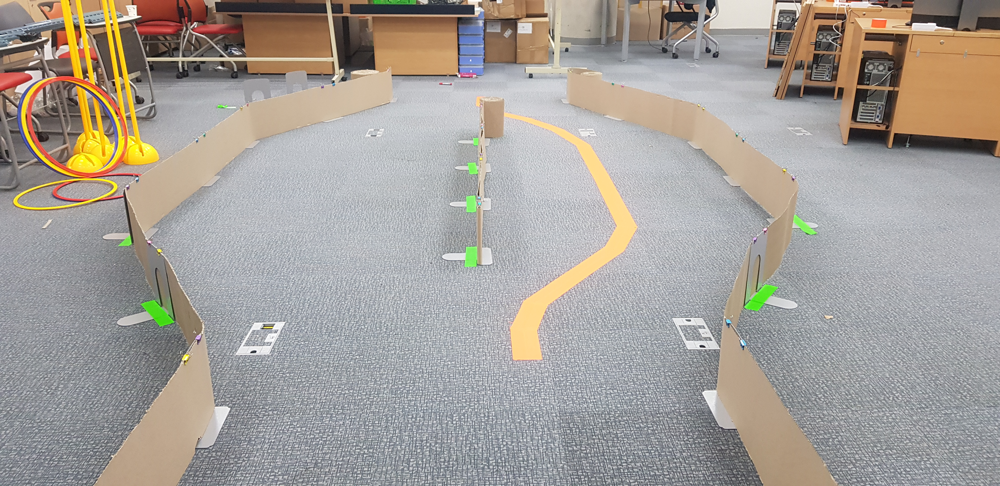

Challenge !!

OpenCV를 이용한 Line Detection
-
사용하게 될 HSV 필터의 개념을 정확히 이해한다.
-
주황색깔 테이프를 인식할 수 있도록 하는 코드를 작성한다.
Step 0: Setup
이번 Line Detection에서 주로 slider_colorsegmentation.py, color_segmentation.py driveNode.py와 함께 작업하게 될 것이다.
자동차에 있는 Jetson Nano에서 다음 코드가 잘 작동되는지 확인해보자.
python
import cv2
cv2.__version__
Step 1: HSV필터를 이용해서 색을 정확히 인식하자
우선 slider_colorsegmentation.py 를 실행하면, 총 두개의 창이 뜨게 된다.
하나는 HSV 필터 설정을 할 수 있는 창이고, 다른 하나는 HSV 필터가 적용되어 카메라의
현재 촬영중인 이미지를 흑백으로 표현하는 창이다.
위에서 설명했던 HSV필터가 적용되면 특정 색상, 채도, 명도 범위에 포함되는 색만을 흰색으로 표현 해준다.
반대로, 포함되지 않는 색은 검은색으로 표현된다.
slider_colorsegmentation.py 를 실행하면, HSV 필터를 설정할 수 있는 창이 뜨게 된다.
각각의 색상, 채도, 명도의 low와 high를 이용해 제공된 주황색 테이프를 잘 인식할 수 있도록 설정해라.
(설정된 HSV 필터는 테이프의 영역만을 흰색으로 표현해야 한다.)
Step 2: Color Segmentation을 이용한 개체 감지(detection)
여러분이 Step 1에서 구한 HSV필터의 설정값은 이제 자동차가 주황색 선로만 따라 움직일 수 있도록 하는 기본 설정값 중 하나이다.
color_segmentation에 들어가면 주석으로 To do 라고 작성되어 있는 부분이 있다.

아래 코드는 임의의 색을 인식할 수 있도록 하는 HSV 필터 설정이다. 아래 코드를 참고하여 여러분들이 part1에서 구했던 HSV필터 설정을 적용해보자.
law_range = np.array( [x1, y1, z1] )
high_range = np.array( [x2, y2, z2] )
color_segmentation 을 잘 작성했는지 확인해 보기 위해서는 해당 파일을 저장하고 난 뒤, teleop을 실행해보자.
실행한 뒤에 카메라에 어떤 물체들이 인식되는지 박스로 표현될 것이다. 이때 박스가 주황색 테이프를 잘 인식하는지, 테이프 뿐만이 아니라 다른 주황색들도 인식하는지 확인해보면 좋을 것 같다.
자동차를 보면 카메라가 자동차 가장 앞쪽에 부착되어 있다.
카메라는 다음 사진과 같이 바닥에 붙어있는 주황색 선만을 인식하며 자동차가 그 선을 따라갈 수 있도록 프로그래밍 되어야 한다.

step 2 에서 가장 중요한 것은 오직 테이프의 색상만을 인식하는지 확인하는 것이 중요하다.
인식 범위가 너무 넓다면, 다른 색들도 카메라가 인식하게 될 것이고, 인식 범위가 너무 좁다면 필요한 색상을 인식하지 못할 것이다.
적당한 범위로 HSV를 설정하는 것이 무엇보다 중요하다.